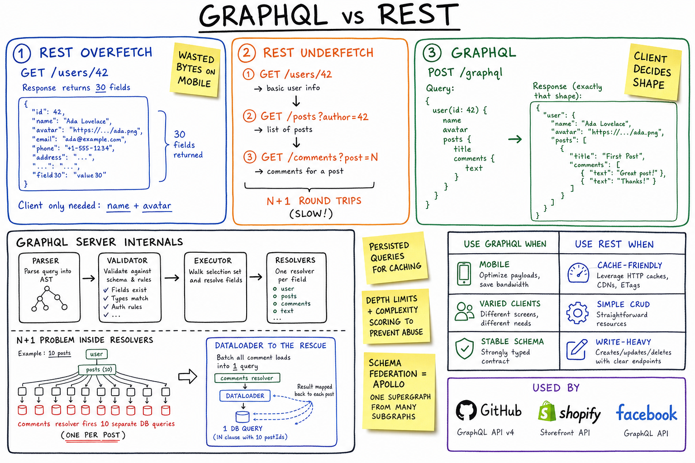

GraphQL // Stretch
Schema-driven query language for APIs. Client specifies exactly which fields it wants; server returns that shape from one endpoint. Solves REST over-fetch / under-fetch — introduces N+1 + complexity. Pick it deliberately, not because it's cool.

REST over-fetch + under-fetch vs GraphQL single query with exact shape; GraphQL server internals (parser/validator/executor/resolvers); N+1 problem and DataLoader batching; decision table for when to use each.
01 — Identity
GraphQL is a query language + runtime over your data. Clients send a query document describing exactly which fields and relations they want; the server returns JSON matching that shape. One endpoint (POST /graphql), one schema, many possible queries. Originated at Facebook 2012, open-sourced 2015.
The real value: the schema is a strongly-typed contract between client and server, and the client controls payload shape. Not "fewer round trips" — that's the marketing pitch.
01a — Core Concepts
| Concept | Meaning |
|---|---|
| Schema (SDL) | Type definitions: type Post { id: ID! title: String! author: User! }. |
| Query | Read operation; one entry point: type Query { ... }. |
| Mutation | Write operation; one entry point: type Mutation { ... }. |
| Subscription | Long-lived stream (over WebSocket). |
| Resolver | Function that returns the value for one field of one type. |
| Fragment | Reusable selection-set named in a query. |
| Persisted query | Pre-registered query hash; client sends hash + variables. Cacheable, abuse-proof. |
| Federation | Combining multiple GraphQL subgraphs behind one supergraph (Apollo). |
| DataLoader | Batching + caching layer per request to defeat N+1. |
| Introspection | Built-in query that returns the schema itself. |
01b — API / Wire
Query
POST /graphql
Content-Type: application/json
{
"query": "query GetUser($id: ID!) { user(id: $id) { name posts { title } } }",
"variables": { "id": "42" },
"operationName": "GetUser"
}
-> 200
{
"data": {
"user": {
"name": "Ada Lovelace",
"posts": [{ "title": "Engine notes" }, { "title": "Charles, please" }]
}
},
"errors": null
}
Mutation
mutation CreatePost($in: CreatePostInput!) {
createPost(input: $in) {
id title author { name }
}
}
Subscription (over WebSocket, graphql-ws protocol)
subscription OnComment($postId: ID!) {
commentAdded(postId: $postId) { id author { name } text }
}
Errors are always partial: the response always returns HTTP 200 (unless catastrophically wrong); a top-levelerrorsarray lists failures per-field.datamay be partially populated. Clients must handle both.
02 — When to Use / NOT Use
| Use GraphQL when | Don't use GraphQL when |
|---|---|
| Many client variants (web, iOS, Android, watch) each need different fields | You have one client and a stable contract — REST is simpler |
| Mobile app needs tight payload control (over-fetch hurts on cell networks) | You're write-heavy (mutations aren't where GraphQL shines) |
| Aggregating multiple backend services into one client-facing API (BFF) | HTTP caching at the edge is critical (REST + ETags is much easier) |
| Mature product with stable schema and good schema governance | Service-to-service traffic — use gRPC for tight contracts |
| Strong typing + introspection are valuable to your tooling | Tiny CRUD APIs — the runtime overhead isn't worth it |
| Frontend devs significantly outnumber backend devs | You don't have GraphQL expertise — cost of getting it wrong is high |
Rule of thumb: GraphQL is great at the frontend edge (BFF / mobile API), poor at service-to-service. Pair with gRPC underneath.
03 — Architecture
Request flow inside a GraphQL server:
POST /graphql
|
v
PARSER -> AST of the query document
|
v
VALIDATOR -> check schema, types, fields exist; arg types; depth; complexity
|
v
EXECUTOR -> walk AST; for each field, call its RESOLVER
|
v
RESOLVERS -> one fn per field per type
| user.posts -> loadPostsForUser(user.id)
| post.author -> loadUser(post.author_id)
v
RESPONSE -> assemble JSON matching query shape
Each field has its own resolver. Defaults to "look up property on parent object". You override for fields that need DB calls, RPCs, computations.
04 — The N+1 Problem & DataLoader
Query: { posts { author { name } } }
Naive resolution:
postsResolver: SELECT * FROM posts LIMIT 10 -> 1 query
for each post:
authorResolver: SELECT * FROM users WHERE id=? -> 10 queries
Total: 11 queries (N+1).
For 100 posts: 101 queries. DB melts.
DataLoader (Facebook):
Each request creates a DataLoader per "thing to load"
loader.load(id) returns a Promise; collects all ids in one tick
Then ONE batch call: SELECT * FROM users WHERE id IN (?, ?, ?, ...)
Result distributed to all waiting Promises
After DataLoader:
postsResolver: 1 query
authorResolver: 1 batched query (10 ids in IN clause)
Total: 2 queries.
Also CACHES per request: loading same author twice = one DB hit.
Every production GraphQL server uses DataLoader (or equivalent). Without it, GraphQL is a DDoS attack on your DB.
05 — Caching
Caching is GraphQL's hardest problem. With REST, each URL is naturally cacheable by HTTP middleware. With GraphQL, every request is POST /graphql with a body — HTTP caches see one URL.
Solutions
- Persisted queries — client pre-registers query, gets a hash; subsequent requests are
GET /graphql/persisted/{hash}?variables=.... Now cacheable + small wire size + can blocklist non-allowed queries in prod. - Per-field resolver cache — cache by (field, args) inside the resolver, often Redis-backed.
- Client-side normalised cache — Apollo Client, Relay normalize by entity ID; multiple queries sharing an entity share cache.
- CDN cache for persisted queries — possible via
GETwith stable URL. - @cacheControl directives — declare per-field TTL; Apollo Gateway aggregates.
06 — Federation
Multiple teams, multiple services, one client-facing API.
Users service: type User { id, name, email }
Orders service: type Order { id, total }
extend type User @key(fields: "id") { orders: [Order] }
Reviews service: extend type User @key(fields: "id") { reviews: [Review] }
A central GATEWAY composes the SUPERGRAPH from these subgraphs.
Client query:
{ user(id:42) { name orders { total } reviews { stars } } }
Gateway:
1. Asks Users for { user(id:42) { id name } }
2. Asks Orders for { _entities([{ __typename:"User", id:42 }]) { orders { total } } }
3. Asks Reviews for { _entities([{ __typename:"User", id:42 }]) { reviews { stars } } }
4. Stitches and returns to client.
Apollo Federation is the canonical implementation. Trade-off: gateway is a SPOF + hop, and inter-service contracts get complicated. Used at Netflix, Expedia, large-org GraphQL stacks. Alternative: schema stitching (older), or "monolithic" GraphQL server that calls many backends.
07 — Subscriptions
Long-lived pushes over WebSocket using the graphql-ws protocol (formerly subscriptions-transport-ws, deprecated). Client sends subscribe message; server pushes data events until the client unsubscribes.
Typical implementation: Server has a Pub/Sub backend (Redis, Kafka, NATS). When a mutation happens -> publish event to channel. All subscribed connections receive and push down their WebSocket. Scaling: - WS connections are stateful and sticky - Need horizontal pub/sub fanout (Redis Pub/Sub, NATS, Kafka per-topic) - Connection state on memory; recover via reconnect
For many use cases, regular polling or Server-Sent Events is simpler. Reserve subscriptions for true real-time (chat, live dashboards).
08 — Security & Cost Defenses
GraphQL exposes a vast attack surface: a single query can chain through millions of objects if you let it.
| Defense | How |
|---|---|
| Depth limit | Reject queries deeper than N (e.g. 7). Stops { user { friends { friends { friends ... } } } } bombs. |
| Complexity scoring | Each field has a cost weight; sum ≤ budget. Higher cost for lists + multipliers. |
| Query allowlist (persisted queries) | Only registered queries allowed in production. Best defense. |
| Field-level AuthZ | Resolver checks user permissions per field. RBAC inside resolvers. |
| Rate limit per cost, not per request | A "1 query" can be 1000× the work of another. |
| Disable introspection in prod | Reduces attacker's schema-mapping ability. |
| Timeout per query | Hard cap to abort runaway queries. |
09 — Operational Concerns
- Observability is harder — one endpoint, infinite query shapes. Use Apollo Studio / Hasura traces / OTel field-level spans to attribute latency.
- Schema evolution — you cannot remove a field that any client still selects. Use deprecation:
@deprecated(reason: "use X"), audit usage, retire when usage drops to zero. - Performance regressions are sneaky — adding a single field can trigger a new N+1 if the resolver isn't batched.
- Mutation idempotency — GraphQL has no built-in idempotency key like REST POST. Add it as an argument:
mutation createOrder(input, idempotencyKey). - File uploads — multipart/form-data extension to spec; awkward. Many teams keep file upload as REST.
10 — Real-World Usage
| Org | Use |
|---|---|
| Originator; powers all mobile clients | |
| GitHub | v4 API is GraphQL; v3 was REST |
| Shopify | Storefront API for embedded checkout |
| Netflix | Apollo Federation across hundreds of subgraphs |
| Airbnb | Mobile BFF |
| Hasura | Engine that auto-generates a GraphQL API on top of Postgres |
11 — Alternatives
| Alternative | When |
|---|---|
REST + sparse fieldsets (?fields=name,avatar) | Most apps; HTTP caching wins |
| JSON:API | Spec'd REST with includes + sparse fields; some over-fetch control |
| gRPC | Service-to-service; strong typing via Protobuf; binary efficient |
| tRPC | TypeScript end-to-end type safety without schema language; great for TS-everywhere stacks |
| OpenAPI / Swagger | REST with strong schema + codegen; widely supported |
| Falcor | Netflix's pre-GraphQL approach; mostly obsolete |
12 — Interview Q&A
When would you pick GraphQL over REST?
What's the N+1 problem?
SELECT IN (...). Without DataLoader, every nested field is a potential DB melt.How does DataLoader work?
loader.load(id) returns a Promise but doesn't fire a DB call immediately; it collects all load() calls within the same tick, then fires one batched fetch. Result is dealt out to waiting Promises. Also caches by key within the request so load(42) twice = one DB hit. Created at Facebook, ported to most languages.How do you cache GraphQL?
What is Apollo Federation?
@key directives to extend types owned elsewhere. The Apollo gateway routes parts of a client query to the right subgraphs and stitches the response. Used by Netflix, Expedia, large multi-team orgs.What are persisted queries?
{hash, variables} — small payload, cacheable as GET, server-side allowlist (only registered queries permitted). Three wins: smaller wire size, CDN caching, query-bomb attack prevention.How do you prevent abusive queries?
How does GraphQL handle errors?
data and errors arrays; data may be partial. Per-field errors don't fail the whole query — non-failing fields still return values. Clients must check the errors array. Surprising for REST devs; "always 200" trips monitoring tools.How would you scale subscriptions?
Why is field-level authorization tricky in GraphQL?
SDE-2 vs SDE-3 differentiator?
| SDE-2 | SDE-3 |
|---|---|
| "GraphQL solves over-fetching with a typed schema" | + N+1 + DataLoader explained, persisted queries for caching, complexity scoring + depth limits, federation vs schema stitching, error semantics (always 200), field-level authZ, when REST + sparse fieldsets is the right answer, subscription scaling via Pub/Sub, schema-evolution discipline |